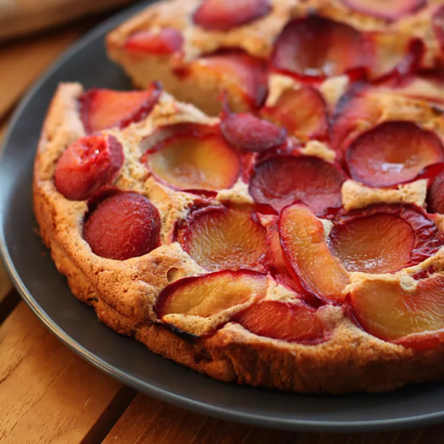

Plum Cake

This is a great plum cake recipe for those who enjoy a lighter cake. Perfect for entertaining as well as for the family.
It is delicious and a great way to make use of my plum tree!
Ingredients
3 large eggs
½ cup butter, softened
½ cup white sugar
1 teaspoon lemon zest
1 cup all-purpose flour
½ teaspoon baking powder
1 ¼ cups plums, pitted and quartered
Directions
- Preheat the oven to 375 degrees F (190 degrees C). Grease and flour a 9-inch tube pan.
- Separate eggs into whites and yolks. Beat egg whites until stiff peaks form; set aside.
- Beat butter and sugar together in a large bowl until light and fluffy. Beat in egg yolks and lemon zest.
- Stir flour and baking powder together, then blend into butter mixture. Gently fold in egg whites. Spread cake batter evenly into the prepared pan. There will only be a little over an inch of batter. Arrange plums, skin-side down, in a nice pattern over the batter.
- Bake in preheated oven until a tester inserted in the center comes out clean, about 40 minutes. Transfer to a cooling rack and allow to cool before serving.